R07 mới nhất: đã trả tiêu đề về vị trí cũ theo yêu cầu. Ảnh căn giữa r06 dưới đây chỉ là lịch sử. Báo cáo r07
P10 r10 · Sửa lỗi tương tác Báo cáo:27 nhóm browser /31 Node PASS . Actual cần review; viewport340×420, không kéo méo ảnh.
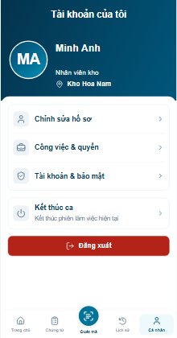
Trước — crop estimated từ screenshot raw 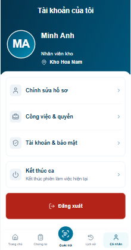
Sau — hàng không chồng hit area R09 · Tài khoản của tôi căn giữa Theo yêu cầu mới nhất
R08 · Tài khoản của tôi Giữ vị trí cũ; nav Cá nhân không đổi. Báo cáo
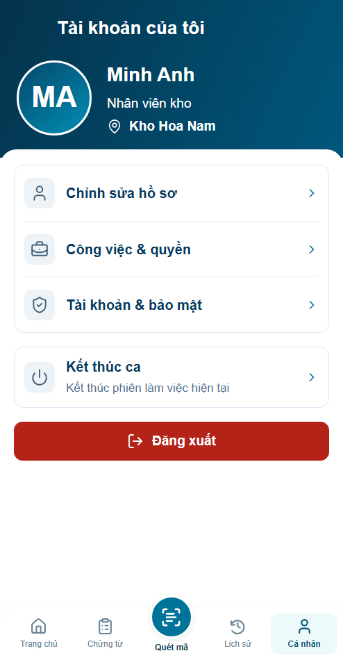
P10 r06 · Tiêu đề căn giữa Báo cáo
Trước 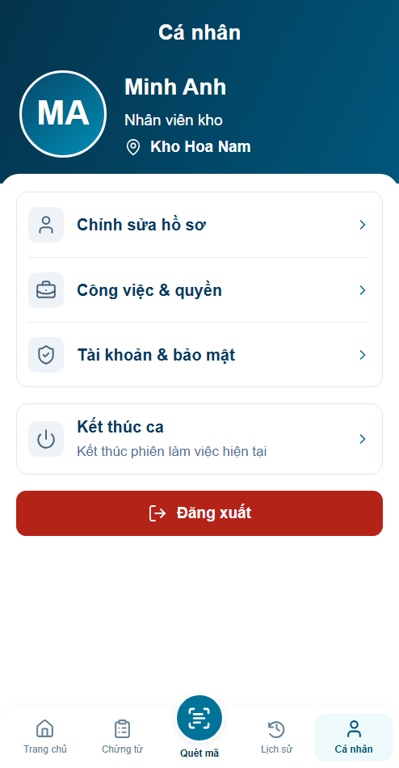
Sau — cùng viewport và fixture P10 r05 · Thao tác thuận tiện Báo cáo r05 ·28 nhóm browser /30 Node PASS; bàn phím thiết bị thật và backend chưa kiểm.
Cá nhân494 Before · cùng viewport/DPR/fixture After r05 · adaptation cần review Hồ sơ494 Before · cùng viewport/DPR/fixture 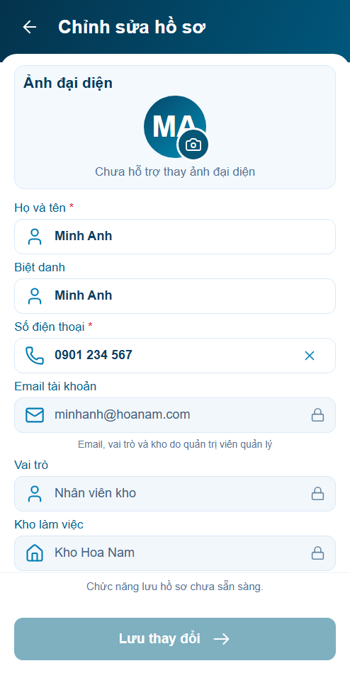
After r05 · adaptation cần review Cá nhân360 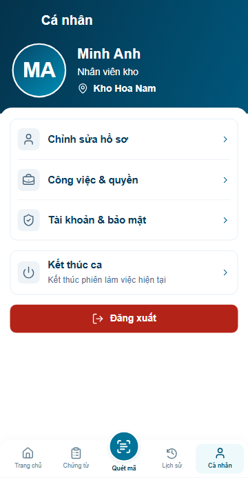
Before · cùng viewport/DPR/fixture 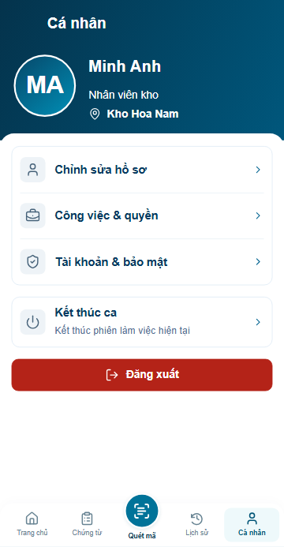
After r05 · adaptation cần review Hồ sơ360 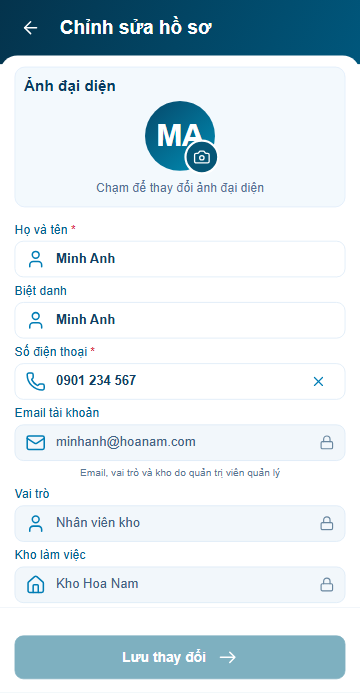
Before · cùng viewport/DPR/fixture 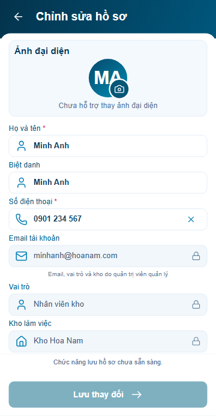
After r05 · adaptation cần review Các revision trước P10 r04 · Nâng cấp UI đã duyệt Báo cáo r04 ·20 nhóm browser PASS; backend profile/upload vẫn chưa tích hợp.
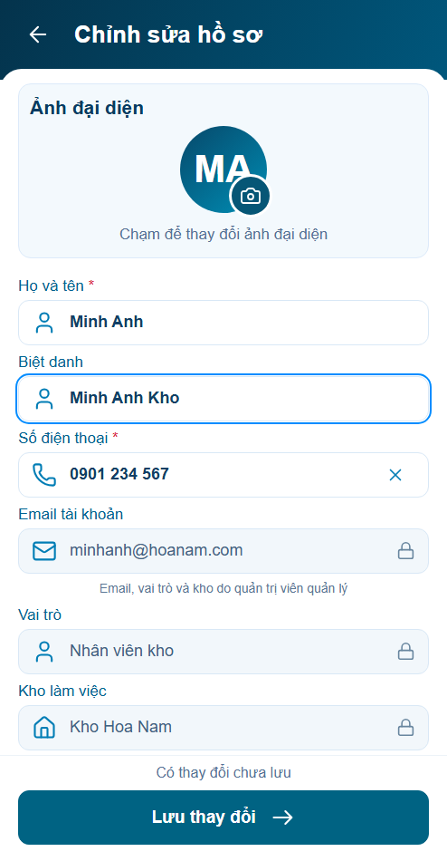
Chỉ báo chưa lưu, footer không nhảy Nhóm Bảo mật đồng bộ S01 P10 r03 · Rà soát ổn định Kết quả: 46 Node / 70 nhóm browser PASS · Đề xuất UI/UX
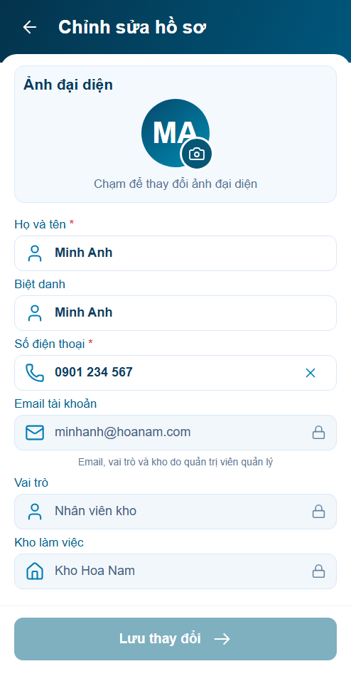
Lưu khóa khi chưa thay đổi 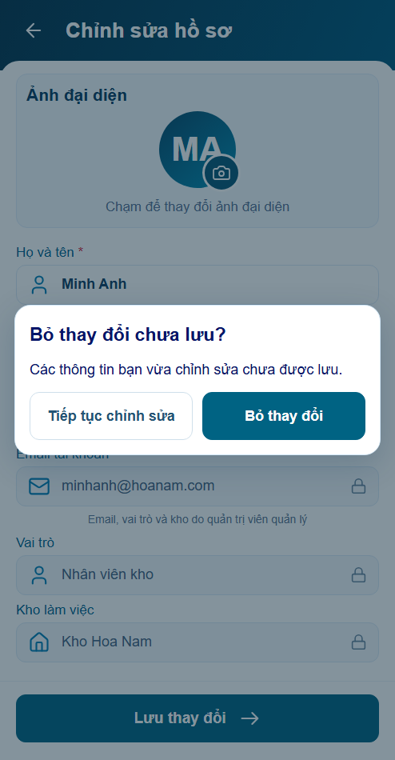
Dirty state và dialog trong app P10 r02 · Cá nhân Đã áp dụng nhóm menu và nút Đăng xuất theo phương án được duyệt. Báo cáo r02
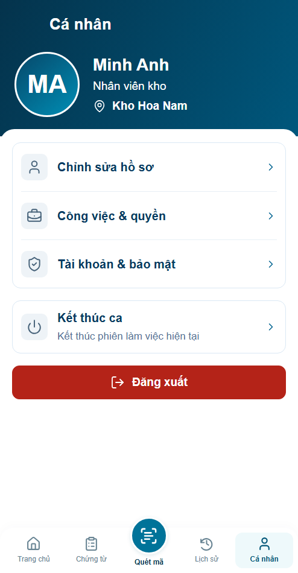
Cá nhân r02 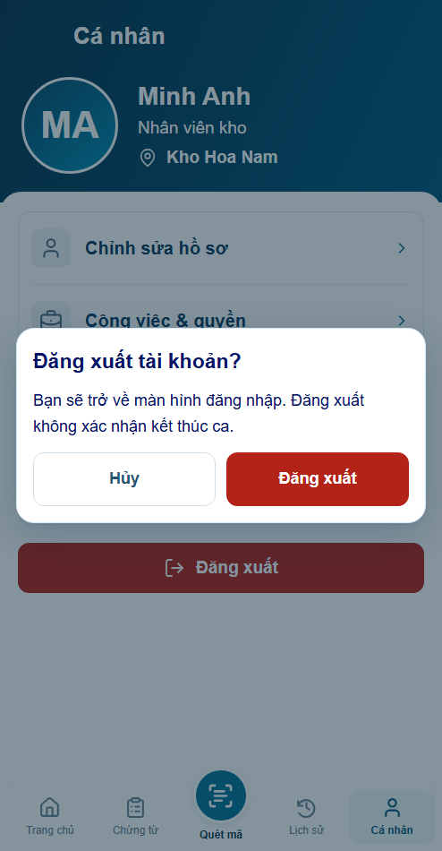
Xác nhận đăng xuất r02 Tham chiếu r01 trước chỉnh sửa P10 · Cá nhân · r01 4/4 panel đã dựng. Visual chờ duyệt; behavior PASS prototype; integration BLOCKED. Baseline và actual khác tỷ lệ do khung app 494×950 đã chốt và bỏ status bar giả; không kéo méo ảnh, không dùng pixel diff để tự nghiệm thu.
Mở app · Đăng nhập minhanh / preview → Bắt đầu ca → Cá nhân. Báo cáo
P10.S01 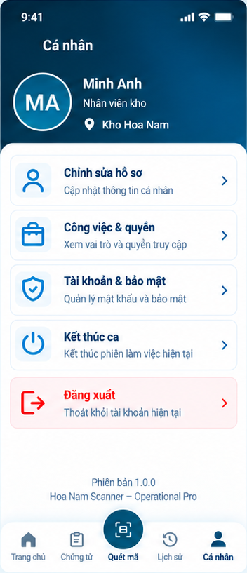
B10 · crop estimated · giữ tỉ lệ gốc 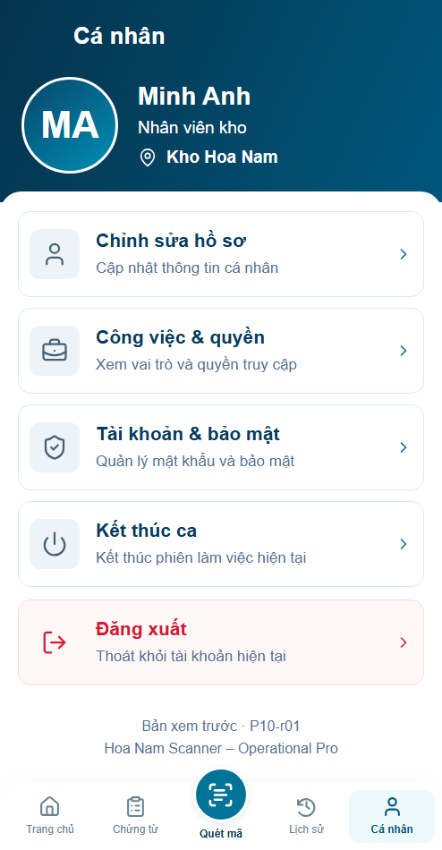
Actual · 494×950 CSS px · DPR 1 P10.S02 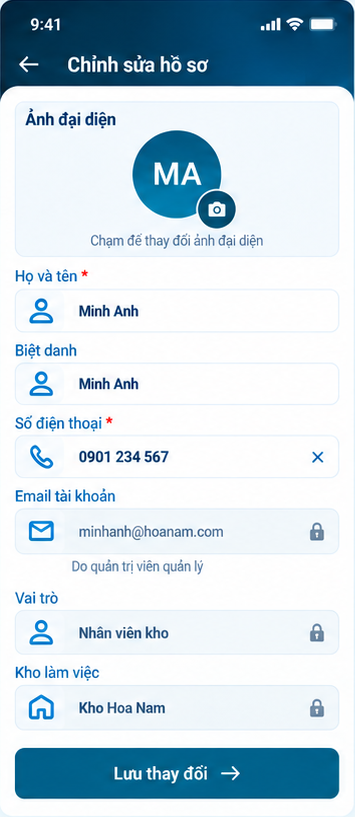
B10 · crop estimated · giữ tỉ lệ gốc 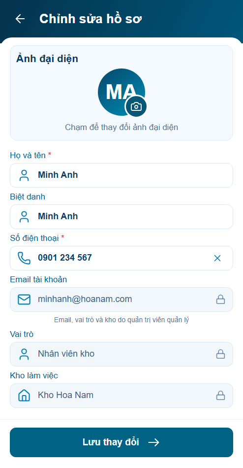
Actual · 494×950 CSS px · DPR 1 P10.S03 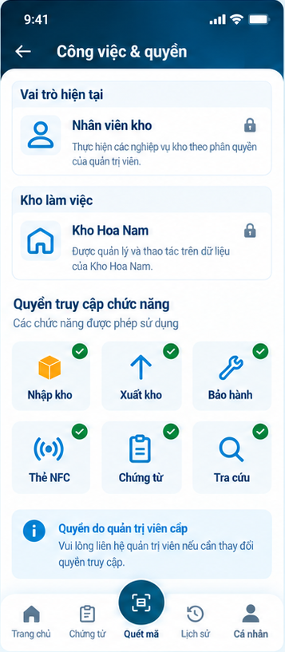
B10 · crop estimated · giữ tỉ lệ gốc 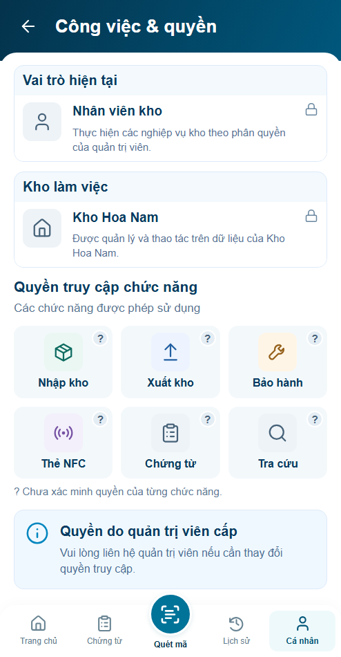
Actual · 494×950 CSS px · DPR 1 P10.S04 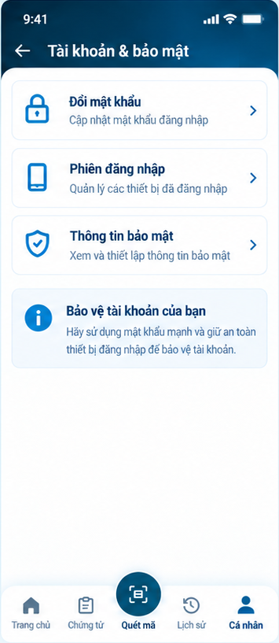
B10 · crop estimated · giữ tỉ lệ gốc 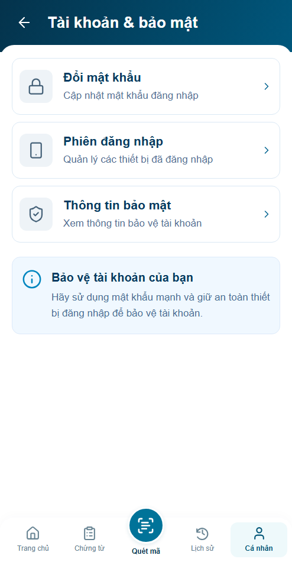
Actual · 494×950 CSS px · DPR 1